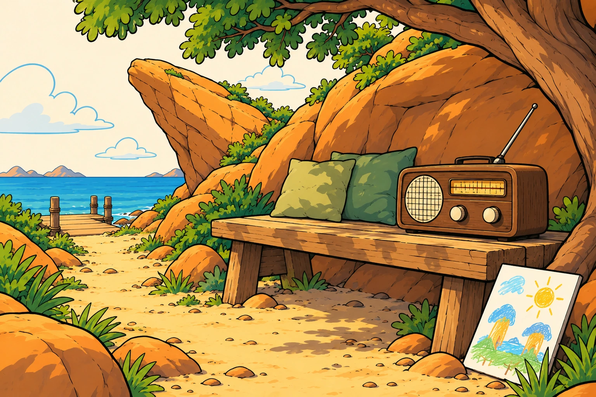

← The full journey
Future Dads Club
Enable sound

Listen
Drag to tune
Future Dads Club
At sea
Loading the boat and traveller…
Sound is off.
Back to sea
Pause movement
Come ashore
Episode 15 of 16
What's in a song?
↗
12 May 2020 · 7 min
Tune the radio
Episode 15
01
04
08
12
16
← Previous episode
Next episode →
Turn radio on
Volume
25%
0:00
7:00
Look at a particular part of the visit
Journey position
At sea
Beside the jetty
Stepping ashore
On the jetty
On the path
At the radio
Hear clearly from the landing